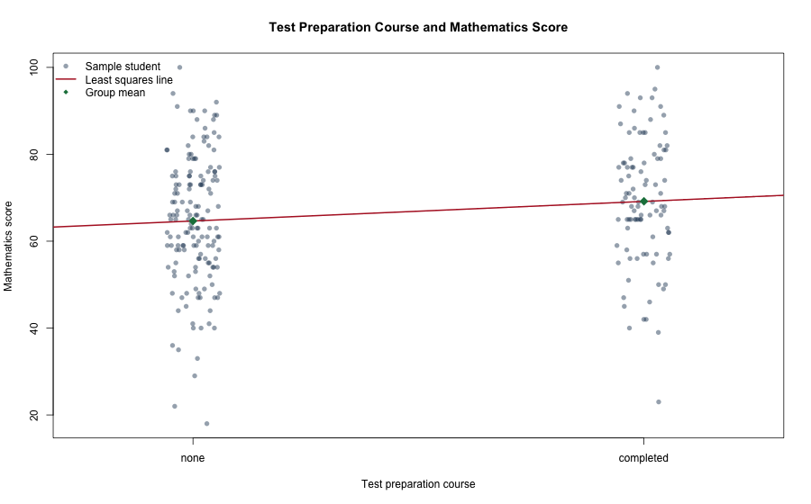
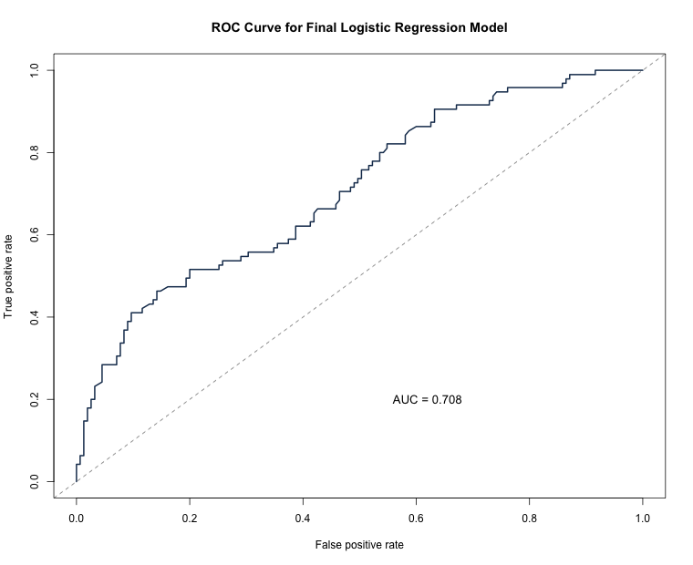

The scatterplot uses a small jitter because the test preparation variable only has two values: none = 0 and completed = 1. The fitted line slopes upward, so students who completed the course had a higher sample mean mathematics score. The mean was 64.65 for students with no preparation course and 69.18 for those who completed it. However, the two groups still overlap a lot, so the visual relationship is not very strong.
The recoded variable is prep_completed = 1 for completed and prep_completed = 0 for none. The fitted least squares model is:
Math_score_hat = 64.65 + 4.53(prep_completed)
| Coefficient | Estimate | Std. Error | t value | p-value |
|---|---|---|---|---|
| Intercept | 64.652 | 1.182 | 54.68 | < 0.001 |
| prep_completed | 4.527 | 1.918 | 2.36 | 0.019 |
The intercept means that a student who did not complete the test preparation course is predicted to get about 64.65 for mathematics. The slope means that completing the preparation course is associated with an increase of about 4.53 marks in the predicted mathematics score. In other words, the completed group performed better on average in this sample.
Hypotheses: H0: beta1 = 0, meaning no linear relationship between course completion and mathematics score. HA: beta1 is not 0, meaning a relationship exists.
The p-value for the slope is 0.019. Since this is less than 0.05, I reject H0. There is evidence in the sample that completing the test preparation course has a relationship with mathematics performance. The 95% confidence interval for the slope is (0.75, 8.31), which is fully above zero.
My conclusion is that completing the course seems to improve the expected mathematics score slightly, but mathematics performance clearly depends on more than just this one variable.
The appropriate model is logistic regression because the response variable is binary. Let p be the probability that a student completed the test preparation course.
log(p / (1 - p)) = -3.065 - 0.037(Math) - 0.076(Reading) + 0.150(Writing)
| Predictor | Estimate | Std. Error | z value | p-value |
|---|---|---|---|---|
| Intercept | -3.065 | 0.771 | -3.973 | < 0.001 |
| Math_score | -0.037 | 0.017 | -2.222 | 0.026 |
| Reading_score | -0.076 | 0.035 | -2.160 | 0.031 |
| Writing_score | 0.150 | 0.035 | 4.269 | < 0.001 |
| Check | Math | Reading | Writing | Comment |
|---|---|---|---|---|
| Correlation with reading/writing | 0.810 with reading; 0.799 with writing | 0.956 with writing | 0.956 with reading | Reading and writing are extremely similar. |
| VIF | 2.965 | 12.399 | 11.803 | Reading and writing are above 10, so multicollinearity is a problem. |
To fix this, I removed Reading_score. It is strongly correlated with Writing_score, and the reduced model keeps the interpretation more stable. After removing reading, the VIF values for mathematics and writing are both 2.763, which is much more acceptable.
The final model is:
log(p / (1 - p)) = -3.403 - 0.045(Math_score) + 0.086(Writing_score)
| Predictor | Estimate | Std. Error | z value | p-value |
|---|---|---|---|---|
| Intercept | -3.403 | 0.752 | -4.525 | < 0.001 |
| Math_score | -0.045 | 0.016 | -2.815 | 0.0049 |
| Writing_score | 0.086 | 0.017 | 5.093 | < 0.001 |
Both predictors in the final model are statistically significant at the 5% level.
| Term | Odds ratio | Interpretation |
|---|---|---|
| Intercept | 0.033 | Baseline odds when both scores are zero. This is not very meaningful practically. |
| Math_score | 0.956 | Holding writing constant, each extra maths mark multiplies the odds of completion by 0.956, a decrease of about 4.4%. |
| Writing_score | 1.089 | Holding maths constant, each extra writing mark multiplies the odds of completion by 1.089, an increase of about 8.9%. |
The negative maths coefficient is a little awkward, so I would interpret it carefully. It is probably influenced by the fact that the exam scores are still related to each other, even after removing reading.

The area under the ROC curve is AUC = 0.7085. This is better than random guessing, but it is not excellent.
| Actual / predicted | Predicted 0 | Predicted 1 |
|---|---|---|
| Actual 0 | 133 | 22 |
| Actual 1 | 51 | 44 |
Using a 0.50 cut-off, the model accuracy is 70.8%, sensitivity is 46.3%, and specificity is 85.8%. So the model is better at identifying students who did not complete the course than those who did complete it. Overall it gives a moderate prediction, but it is not strong enough to rely on by itself.